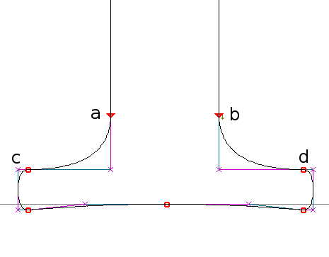
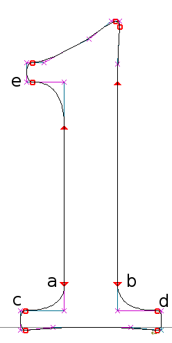

Functions, Macros and Glyph Programs
Functions and macros are blocks of code that you write once and invoke wherever they are needed. The compiled code for a function is stored separately from other code in a font; the function is "called" at run time. The compiled code for a macro is inserted in the program stream at the place where it is called: after compilation there is nothing to distinguish the macro code from any other code in a glyph program. Both the function and the macro can take parameters--that is, values passed to the function or macro from the code that calls it and then consulted or operated upon by the function or macro.
A <glyph> program can be called from another <glyph> program, very much as a macro is called. This feature is useful for hinting accented glyphs if you prefer not to use TrueType components. Like a macro, a <glyph> program can take parameters.
Functions
In most programming languages, the great value of a function is that it can act upon information that is not known until passed in one or more parameters at run time, and it can operate on a value and return it transformed. And yet there is no standard way to pass parameters to a TrueType function, and no way to return a value from it. In TrueType, functions are numbered rather than named as in most programming languages. Xgridfit overcomes these limitations, providing for the naming of functions, enabling the passing of parameters, and providing a mechanism for returning values.
Defining functions
Each function for a font is defined in a <function> element. Each <function> is identified by a name attribute. If the function takes parameters, these must be defined in <param> elements, which come first in the function:
<function name="my-function">
<param name="first-param"/>
<param name="second-param"/>
. . .
</function>
A function parameter is a read-only value: it can be referenced in any instruction element that reads values:
<function name="my-function">
<param name="ref-point"/>
<param name="move-point"/>
<move>
<reference>
<point num="ref-point"/>
</reference>
<point num="move-point"/>
</move>
</function>
A parameter may have a default value, used if the parameter is not specified when the function is called. The value may be a number literal or a global constant. Specify the default value with the value attribute (e.g. value="0").
A function may return one value (and that value, like all others in Xgridfit, must be a number). A function that returns a value must have the attribute return="yes". Then, within, the function, assign a value to "return," e.g.
<set-equal target="return" source="control-value(stem-width) / 2"/>
For a way around the one-value return limitation, see "Passing parameters by reference" below.
Calling functions
A function may be called (its code executed) from a glyph program, the pre-program, or another function. To call a function, use the <call-function> element, which may contain one or more <with-param> elements, one for each of the function's parameters:
<call-function name="cap-half-standard-serif">
<with-param name="base" value="bottom"/>
<with-param name="near-base" value="bottom-serif-bottom"/>
<with-param name="opposite-base" value="bottom-serif-top"/>
</call-function>
It frequently makes sense to call a function repeatedly, once for each instance of some visible feature (such as a serif). In that case the content of <call-function> may be several <param-set> elements, each containing one or more <with-param> elements specifing the parameters for one running of the function:
<call-function name="auto-cap-vert-serif">
<param-set>
<with-param name="base" value="top-right"/>
</param-set>
<param-set>
<with-param name="base" value="top-left"/>
</param-set>
<param-set>
<with-param name="base" value="bottom-right"/>
</param-set>
<param-set>
<with-param name="base" value="bottom-left"/>
</param-set>
</call-function>
The function is called once for each <param-set> using TrueType's efficient LOOPCALL instruction.
The list of parameters for each call to the function must be complete, except for any parameters with default values. Omitting a parameter generates a fatal compile error. The order of parameters in a call is not significant.
A parameter value can be any value or expression, as long as it can be resolved to a number at run time. It cannot be a more complex structure--a <line>, <range> or <set>. Variables are by default passed to functions by value, while control values are passed by reference. This may seem like an inconsistency, but it is the behavior that is most often wanted. It can easily be overridden, as the next section explains.
Global constants and variables are visible from a function; and the function can contain its own variables, defined in <variable> elements just after the <param> elements.
A <call-function> element for a function that returns a value should ordinarily have a result-to attribute specifying a variable, control value, or a graphics variable that can be written to. If this element is missing, the Xgridfit compiler issues a warning and the value is left on the stack.
Function Variants
Function variants are alternative versions of a function to be used at different sizes or resolutions. Define function variants by including one or more <variant> elements at the end of a function definition, thus:
<function name="myfunc">
<param name="myparam"/>
<!-- default function programming -->
<variant test="pixels-per-em < 20">
<!-- programming to be used at less than 20 pixels per em. -->
</variant>
<variant test="pixels-per-em > 100">
<!-- programming to be used at greater than 100 pixels per em. -->
</variant>
</function>
Though you define functions with variants along with other functions (those that lack variants), the TrueType engine actually defines them when the <pre-program> is run. Thus the test attribute of the <variant> element, which determines whether a particular variant is to be used, may be based on whatever is known at that time--typically size and resolution information.
A function variant cannot have its own <param> or <variable> definitions; it always uses those of the function in which it is embedded. In the example above, the myparam parameter is visible inside the <variant> elements just as it is in the default programming (that which is not inside a <variant> element and which is used if none of the test attribute evaluate as true at run-time).
If you have defined more than one <variant> for a function, the test attributes should be exclusive: that is, no more than one should evaluate as true at any given time. If you do the following:
<function name="myfunc">
. . .
<variant test="pixels-per-em < 20">
. . .
</variant>
<variant test="pixels-per-em <= 10">
. . .
</variant>
</function>
then at 10 pixels-per-em the TrueType engine will first define the first function variant and then overwrite it with the second. This should not produce an error, but it certainly is an inefficient way of doing things. This is far better:
<function name="myfunc">
. . .
<variant test="pixels-per-em < 20 and pixels-per-em > 10">
. . .
</variant>
<variant test="pixels-per-em <= 10">
. . .
</variant>
</function>
The advantage of using function variants over using <if> elements within functions to produce different behavior depending on size or resolution is that in the former case the decision which programming to use is made just once, when the <pre-program> is run, while in the latter case the decision is made over and over again, whenever the function is called.
Passing parameters by reference
Suppose you want to write a function that returns a vector. The function can return only a single number, but a vector is a structure consisting of two numbers: x and y coordinates. The limitation on the return from a function can be overcome by passing two variables to the function by reference so that the function can store the vector in those variables. Use the index() operator to do so:
<variable name="vector-x"/>
<variable name="vector-y"/>
. . .
<call-function name="get-vector-from-line">
<with-param name="line-a" value="a"/>
<with-param name="line-b" value="b"/>
<with-param name="x" value="index(vector-x)"/>
<with-param name="y" value="index(vector-y)"/>
</call-function>
Since a number in TrueType carries no type information with it, the code inside your function must recognize that the parameters x and y are references to variables instead of the values of variables, and that they can be written to. Use the variable() operator for this purpose.
<function name="get-vector-from-line">
<param name="line-a"/>
<param name="line-b"/>
<param name="x"/>
<param name="y"/>
<with-projection-vector to-line="parallel">
<line>
<point num="line-a"/>
<point num="line-b"/>
</line>
<store-projection-vector x-component="variable(x)"
y-component="variable(y)"/>
</with-projection-vector>
</function>
After the function returns the vector will be stored in variables vector-x and vector-y.
Macros
A macro is a good way to regulate features (such as serifs) that occur frequently and yet do not require large or complex stretches of code. Using a macro can save the overhead of a function call and bypass the somewhat bulky code required to read function parameters. The downside of macros is that, since the compiled code is inserted repeatedly into the font, they can increase the font's size significantly. Macros, then, are most useful for features that are very frequent but also fairly simple.
Each macro is defined in a <macro> element. Here is a macro definition that regulates a standard vertical stem with attached serif when one point on the stem is anchored to another point:
<macro name="lc-vert-stem-serif-anchor-dist">
<param name="anchor"/>
<param name="distance-from-anchor"/>
<param name="stem-a"/>
<param name="serif-a"/>
<param name="stem-b"/>
<param name="serif-b"/>
<move distance="distance-from-anchor">
<reference>
<point num="anchor"/>
</reference>
<point num="stem-a"/>
<move distance="lc-serif-width">
<point num="serif-a"/>
</move>
<move distance="lc-vert-stroke">
<point num="stem-b"/>
<move distance="lc-serif-width">
<point num="serif-b"/>
</move>
</move>
</move>
</macro>
Here is a call to that macro:
<call-macro name="lc-vert-stem-serif-anchor-dist">
<with-param name="anchor" value="left-left"/>
<with-param name="distance-from-anchor" value="hn-width"/>
<with-param name="stem-a" value="right-right"/>
<with-param name="serif-a" value="right-serif-right"/>
<with-param name="stem-b" value="right-left"/>
<with-param name="serif-b" value="right-serif-left"/>
</call-macro>
The compiled code, once inserted in the font, is twenty-four bytes in length.
Like a function, a macro can take parameters (and the <param> element can contain a value attribute with a default value). The value of the <param> or <with-param> element is substituted at compile time rather than passed at run time. The <call-macro> element may contain <with-param> elements, if the macro code is to be compiled and inserted just once where the <call-macro> element occurs. Alternatively, the <call-macro> element may contain any number of <param-set> elements, each containing a complete set of <with-param> elements, and the macro code is inserted for each one.
Macro parameters
Though macro parameters look like function parameters, they are much more flexible. The Xgridfit compiler substitutes the value in the <with-param> element for the identifier that references the <param> inside the macro; then it proceeds to resolve the value as it would any other value. Thus the value passed as a parameter may be any kind of expression. The name of a <line>, <range> or <set> can also be passed, and referenced by a ref inside the macro.
You may not only pass a <line>, <range> or <set> by name, but also declare it as the content of a <with-param> element. This is a convenience when you do not need to use the structure elsewhere in the glyph program:
<with-param name="s">
<set>
<point num="p1"/>
<point num="p2"/>
<point num="p3"/>
</set>
</with-param>
When <with-param> has content the value attribute is optional: assign it some arbitrary value if your macro code tests for the presence of a parameter.
Macros and conditional compilation
You can make macros more flexible by using conditional compilation. Any stretch of code may be compiled conditionally by enclosing it in a <compile-if> element, and a <move>, <align>, <interpolate>, <shift> or <delta> element can be compiled conditionally by including the compile-if attribute. The test attribute of <compile-if> and the compile-if attribute may contain only expressions that can be evaluated at compile time. But since point numbers in Xgridfit are usually constants, and thus known at compile time, it is usually possible to base conditional compilation on point numbers. For example, the following macro takes eleven parameters, of which six are optional: it can control a visual structure that is either more or less complex:
<macro name="lc-vertical-stem-with-serif-anchor">
<param name="anchor"/>
<param name="distance-from-anchor" value="-1"/>
<param name="stem-a"/>
<param name="stem-a1" value="-1"/>
<param name="stem-a2" value="-1"/>
<param name="serif-a"/>
<param name="stem-b"/>
<param name="stem-b1" value="-1"/>
<param name="stem-b2" value="-1"/>
<param name="serif-b"/>
<param name="serif-top" value="-1"/>
<compile-if test="distance-from-anchor >= 0">
<move distance="distance-from-anchor">
<reference>
<point num="anchor"/>
</reference>
<point num="stem-a"/>
<move distance="lc-serif-width">
<point num="serif-a"/>
</move>
</move>
<else>
<move>
<reference>
<point num="anchor"/>
</reference>
<point num="stem-a"/>
<move distance="lc-serif-width">
<point num="serif-a"/>
</move>
</move>
</else>
</compile-if>
<align compile-if="stem-a1 >= 0 and stem-a2 < 0">
<point num="stem-a1"/>
</align>
<align compile-if="stem-a1 >= 0 and stem-a2 >= 0">
<point num="stem-a1"/>
<point num="stem-a2"/>
</align>
<move distance="lc-vert-stroke">
<reference>
<point num="stem-a"/>
</reference>
<point num="stem-b"/>
<align compile-if="stem-b1 >= 0 and stem-b2 < 0">
<point num="stem-b1"/>
</align>
<align compile-if="stem-b1 >= 0 and stem-b2 >= 0">
<point num="stem-b1"/>
<point num="stem-b2"/>
</align>
<move distance="lc-serif-width">
<point num="serif-b"/>
</move>
</move>
<compile-if test="serif-top >= 0">
<move distance="ascender-serif-x-width">
<reference>
<point num="stem-a"/>
</reference>
<point num="serif-top"/>
</move>
</compile-if>
</macro>
This macro can control the points of a simple structure like this one
|  |
with this call:
<call-macro name="lc-vertical-stem-with-serif-anchor">
<with-param name="anchor" value="an"/>
<with-param name="stem-a" value="a"/>
<with-param name="stem-b" value="b"/>
<with-param name="serif-a" value="c"/>
<with-param name="serif-b" value="d"/>
</call-macro>
If points must be aligned with "stem-a" or "stem-b," they can be passed via parameters "stem-a1," "stem-b1," and so on. If there is a top serif, as on a lower-case i, the end point for that serif can also be passed to the macro, and the appropriate code will be compiled:
|  |
<call-macro name="lc-vertical-stem-with-serif-anchor">
<with-param name="anchor" value="an"/>
<with-param name="stem-a" value="a"/>
<with-param name="stem-b" value="b"/>
<with-param name="serif-a" value="c"/>
<with-param name="serif-b" value="d"/>
<with-param name="serif-top" value="e"/>
</call-macro>
Glyph Programs
A glyph program may stand by itself and also be called from within another glyph program. It is a simple matter to prepare a glyph program to play such a dual role, and equally simple to call the program. It is handy to be able to call a glyph program if, like a number of font makers, you prefer to avoid using the TrueType component mechanism to make accented glyphs. If you are adding instructions to, say, eacute, then as long as the outlines that constitute the e and the acute portions of the glyph are identical to those of the e and acute glyphs, it makes sense to call the glyph programs for e and acute to instruct the composite. The resulting glyph program might look something like this:
<glyph ps-name="eacute">
<constant name="last" value="89"/>
<call-glyph ps-name="e">
<with-param name="interpolate" value="0"/>
<with-param name="left-sidebearing" value="last + 1"/>
<with-param name="right-sidebearing" value="last + 2"/>
</call-glyph>
<call-glyph ps-name="acute" variables="no">
<with-param name="offset" value="66"/>
<with-param name="left-sidebearing" value="last + 1"/>
</call-glyph>
</glyph>
The first elements in the <glyph> program being called must be <param> elements; these are exactly like the <param> elements in functions and macros. Because a <glyph> program must be able to run by itself as well as be called, the value attribute, which supplies a default value for the <param>, is usually obligatory.
The glyph program may take one special parameter, named offset. If the offset parameter is present, then its value is automatically added to all point numbers. The sensible default value for offset will usually be zero. With the offset parameter, the beginning of the glyph program for acute might look like this:
<glyph ps-name="acute">
<param name="offset" value="0"/>
<param name="left-sidebearing" value="last + 1"/>
<constant name="last" value="17"/>
<constant name="bottom" value="3"/>
<constant name="top" value="10"/>
. . .
Note that the Xgridfit compiler cannot always recognize which numbers are point numbers. It will always handle <point> elements correctly, but when point numbers are passed as parameters to functions, macros, and other glyph programs, you must either add the offset value manually or (perhaps better) use the point operator to indicate to the compiler that the number is a point:
<with-param name="p" value="pt + offset"/>
<with-param name="p" value="point(pt)"/>
You must do the same in <push> elements and in all expressions that do not appear in <point> elements. To avoid complications, it might be best to arrange glyphs in such a way that offsets are not needed for the more complex features. In the glyph program for eacute, illustrated above, acute is less complex than e, so acute has the offset.
An important difference between a glyph program run by the TrueType engine and one called by another glyph program is that the TrueType engine sets the various graphics variables to their default values before running the program; it does not perform the same service for the called glyph program. If your program has changed the graphics state, you should set the variables you've changed to their default values before calling a glyph program. For most graphics variables (those whose state Xgridfit tracks), you may do this by calling <restore-default>, including the name attribute with one of the following values:
- minimum-distance
- control-value-cut-in
- single-width
- single-width-cut-in
- delta-base
- delta-shift
- round-state
- all
The all option sets all of the above graphics variables to the defaults set by your Xgridfit program, or the TrueType defaults if you have not explicitly set any defaults. It also sets several graphics variables that Xgridfit does not track (the freedom and projection vectors and the auto-flip toggle) to their TrueType defaults. The all option is an expensive one, of course; it is best to be aware of the condition in which your program so far has left the graphics state and call <restore-default> only for those graphics variables that must be reset.
Callable Parameters
A parameter to a macro or glyph program (but not a function) may contain code to be executed within the called code block. A call to a glyph program, for example, might look like this:
<call-glyph ps-name="dieresis">
<with-param name="offset" value="A/total"/>
<with-param name="delta">
<delta>
<delta-set size="3" distance="4">
<point num="dieresis/left-left + A/total"/>
</delta-set>
</delta>
</with-param>
</call-glyph>
Within the glyph program, the parameter is "called" with the <call-param> element:
<call-param name="delta"/>
The parameter is declared at the top of the macro or glyph program. It is like other parameters, except that a value attribute, if present, is ignored, and that the <param> element can contain code to be executed if a <with-param> element of that name is not found in the call to the macro or glyph program. In the following <param> element, for example, the default code simply touches a point:
<param name="delta">
<move round="no">
<point num="left-left"/>
</move>
</param>
It is an error if no <param> is found to match the <call-param> element. However, if there is no matching <with-param> element in the call to the macro or glyph program and the <param> contains no default code, that is not an error. In that case, the Xgridfit compiler issues a warning and does nothing.
The <call-param> element can pass no parameters to the called code: if it contains <with-param> elements, they are ignored. When writing code to be passed via a parameter to a macro or glyph program, it is important to take context into account. Constants, variables, and other elements declared within, say, a <glyph> element are not visible from outside of it. Thus, in the <call-glyph> example above, the left-left point in the called glyph must be referenced via glyph/constant syntax as dieresis/left-left. But for the <param> example this is not necessary, since the default code is declared within the glyph program itself.
Nesting and Recursion
A TrueType function can call another TrueType function, including itself. Before Xgridfit version 2.2 there were significant limitations on the ability of macros to call other macros and of called glyph programs to call macros. But in version 2.2 these limitations have been removed. Thus it is practical to construct a macro that does a complex job by calling several macros that do simple jobs. For example:
<macro name="single-serif">
<param name="base"/>
<param name="serif-end"/>
<move distance="serif-width">
<reference>
<point num="base"/>
</reference>
<point num="serif-end"/>
</move>
</macro>
<macro name="double-serif">
<param name="left-base"/>
<param name="left-serif-end"/>
<param name="right-base"/>
<param name="right-serif-end"/>
<call-macro name="single-serif">
<with-param name="base" value="left-base"/>
<with-param name="serif-end" value="left-serif-end"/>
</call-macro>
<call-macro name="single-serif">
<with-param name="base" value="right-base"/>
<with-param name="serif-end" value="right-serif-end"/>
</call-macro>
</macro>
It is also perfectly all right for a macro to call itself recursively; though it must be remembered that recursion, for a macro, is in the compilation, not in the execution. Thus this macro:
<macro name="touch-points">
<param name="first"/>
<param name="last"/>
<move round="no">
<point num="first"/>
</move>
<compile-if test="first < last">
<call-macro name="touch-points">
<with-param name="first" value="first + 1"/>
<with-param name="last" value="last"/>
</call-macro>
</compile-if>
</macro>
if called like this:
<call-macro name="touch-points">
<with-param name="first" value="0"/>
<with-param name="last" value="2"/>
</call-macro>
will generate code that looks like this:
PUSHB_1
0
MDAP[0]
PUSHB_1
1
MDAP[0]
PUSHB_1
2
MDAP[0]
which may or may not be what you want.